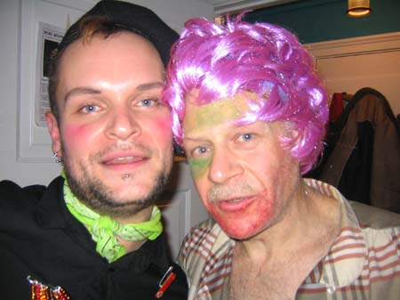

| dunst Spejder Fest | 26. November 2004 |
 |
|
| Antoni & Søde Car O'lina. Photo: Hunter. Antoni blev så fuld at kan kastede op i en fin reol inde på KFUM & K's dagmarstuer. Han gjorde alt for ikke at ramme gulvteppet med Putas tis i. Søde Car O'lina skiftede udseende senere på aftenen til noget mere afslappet. åben sjorte og lilla hår. |
|